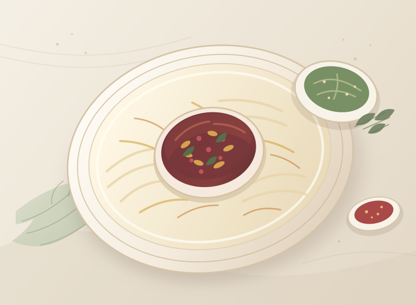

یک جای دنج برای دستورهای خوشمزه
غذاهای خوب،
غذاهای خوب،
خاطره میسازند.
دستورهای دوستداشتنیات را یکجا نگهدار، هر وقت خواستی پیدایشان کن و با خیال راحت دوباره بپز.
دستورهای خودت روی همین دستگاه میمانند؛ بدون حساب کاربری و بدون سرور.

با عشق
دستپخت کن
دستپخت کن
طعمِ خانه، همیشه ماندنیست
گنجینهی آشپزخانه
امروز چی بپزم؟
چند ایدهی نمونه برای شروع؛ دستورهای خودت را هم بهراحتی اضافه کن.
۰دستور
۰پسندیده
چیزی پیدا نشد
عبارت دیگری را جستوجو کن یا فیلترها را پاک کن.
دفترچهی خودت، دست خودت
دستورهایت فقط برای خودت میمانند.
این سایت کاملاً استاتیک است. دستورهای تازه و پسندیدهها در مرورگر همین دستگاه ذخیره میشوند و به دستگاه دیگری منتقل نمیشوند؛ برای جابهجایی، از پشتیبان JSON استفاده کن.